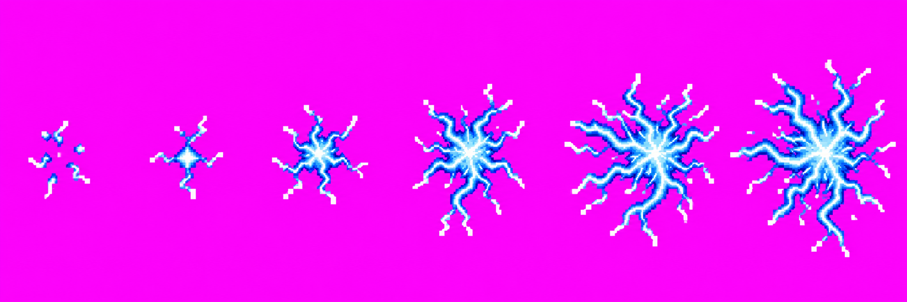
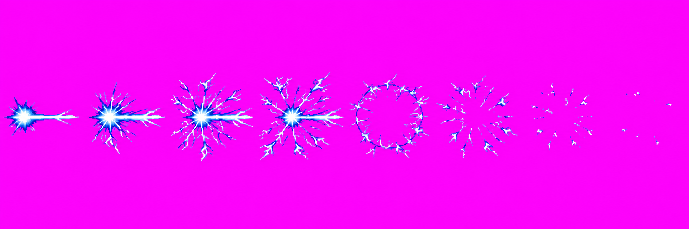
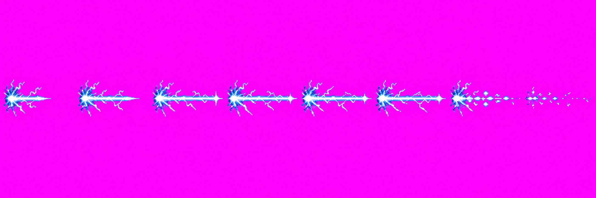
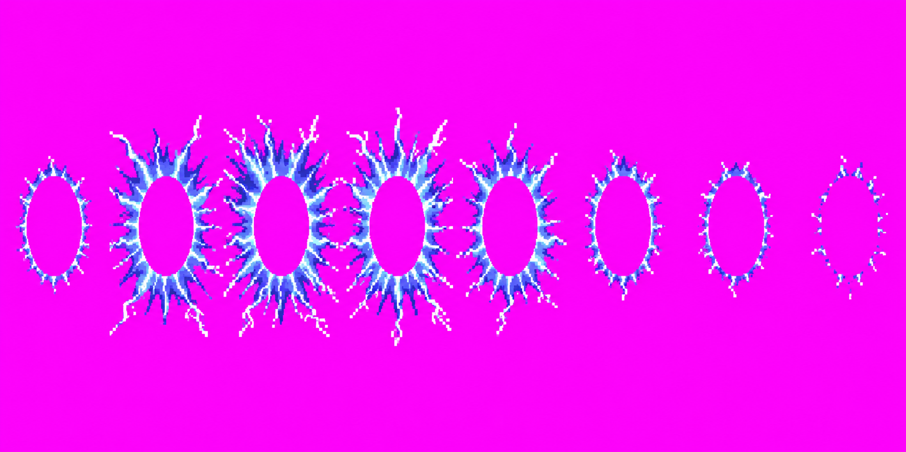
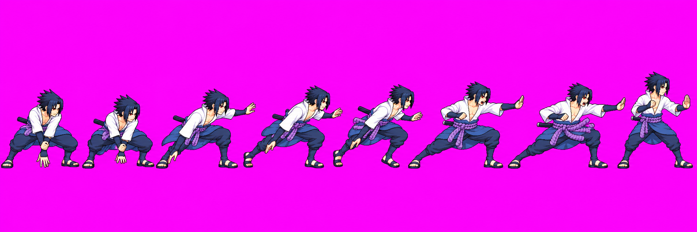
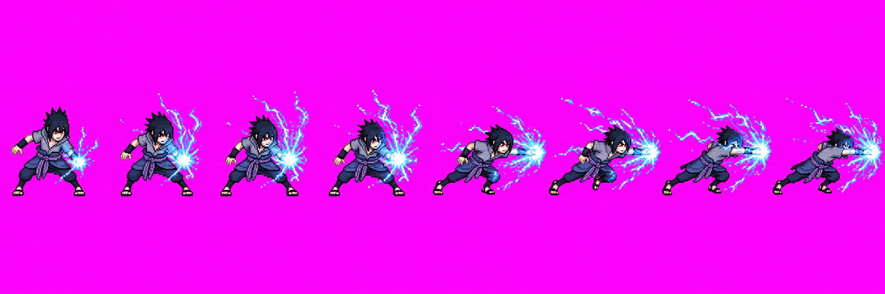

Sasuke skills revamp · batch 1
Raw image review candidates from art/sasuke-skills. The user approved all four effect drawings via Claude relay skills #14. Approval covers the drawings; Claude owns HD packing and game integration. The Chidori body strip and A1 Chidori hand effect remain technical holds and are not approval candidates.
Technical status: source pack produced eight frames for Form, Burst, Spear and Current after two {"split":"even"} sidecars. The current packer output is the 128 px page and drops manifest hd:true during normalization, so no 256 px HD atlas was produced. The Spear pack also reports one clipped frame. Claude needs a packer-side fix/repack before integration; these source images remain raw and versioned.
User-approved effects · v01
chidoriForm v01 approved drawing

6 frames · 3/3 calls · growing sparks into the formed Chidori knot. Packer found 6 frames; soft halo remains visible.
chidoriBurst v01 approved drawing

8 frames · 2/3 calls · piercing spike, expanding lightning and fade. Packer found 10 automatically; source sidecar now requests even 8-frame splitting. Specks were removed in preview.
chidoriSpear v01 approved drawing

8 frames · 1/3 calls · thin blade grows, holds, then breaks into sparks. Packer found 9 automatically; source sidecar requests even 8-frame splitting. One packed frame clips.
chidoriCurrent v01 approved drawing

8 frames · 1/3 calls · outward discharge around a clear body area. Packer found 8 frames; it detected one touching pose group.
Technical holds · not approval candidates
special v14 · attempt 2

3/3 calls used. Painterly/anti-aliased rendering; frames 5–6 do not show a distinct follow-through. No production raw candidate filed.
special v14 · attempt 3

Same technical hold; preserved for provenance only. No production raw candidate filed.
chidori · invalid attempt 3

3/3 calls used. Contains Sasuke inside the effect strip, violating the effect-only requirement. Kept under _qa_hold/; not a candidate.
Attempt ledger and hashes: art/characters/sasuke/production/skills-revamp-batch1/. The packed atlas report, including unrelated sparse-checkout warnings, is in the handoff.